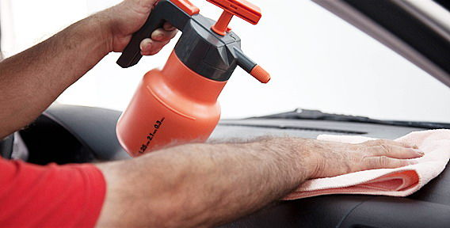

Практически все автолюбители моют кузов своего автомобиля, но не так часто занимаются чисткой салона. Мало кто из них понимает, что уборка салона – это такая же не маловажная процедура, как и мытье кузова. Влажную уборку в салоне необходимо проводить регулярно, если этого не делать, то интерьер салона быстро потеряет хороший внешний вид. Не стоит забывать и о том, что водитель много времени проводит за рулем и дышит пылью, которая въедается в обивку салона и скапливается в других местах. Всем известно то, что пыль наносит серьезный вред здоровью человека, например, может вызвать аллергию. Обратитесь к нашим специалистам, и они сделают салон вашего автомобиля свежим и безупречно чистым.
Влажная уборка салона автомобиля состоит из следующих основных этапов:
- пылесосится обивка, коврики, все щели и воздуховоды;
- проводится влажная протирка всех пластиковых элементов салона.
Наномойка Антидождь Инновационный автошампунь Полировка «Жидкое стекло»